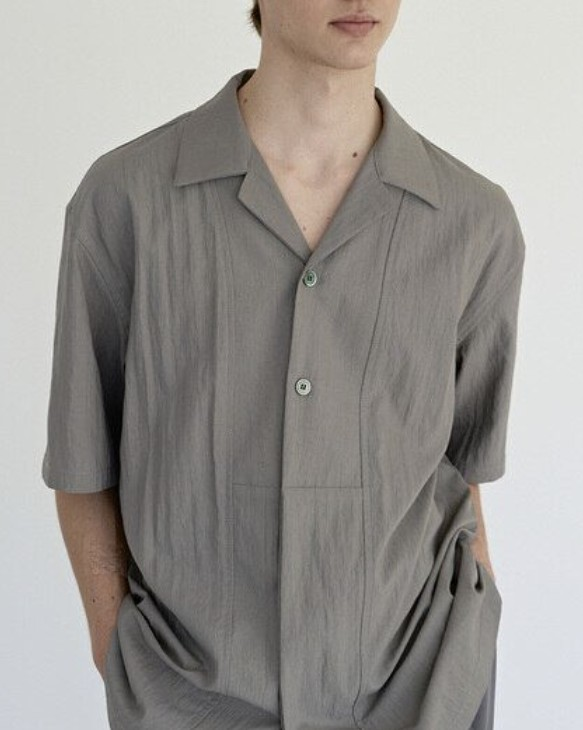
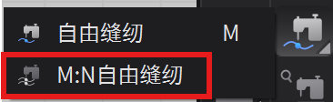
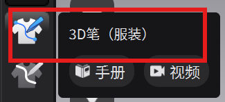
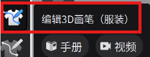

课程文件【男装-上身原型板】
CLO3D 项目文件 · ZPRJ · 2.1 MB

CLO3D / CHAPTER 02 · PATTERN MAKING
一起来做一件
男士衬衫吧
从男士基础版开始，转移省道的量，像用硫酸纸描图一样勾勒无省道上衣板，再切出板片、安排到模特身上并缝合模拟。跟着录屏理解每一步，设计自己的宽松衬衫版型。
准备版片与模特
从男士基础版开始
打开课程文件，里面已经有男士基础版片。先加入虚拟模特，再把版片放到模特身上对应的位置，为接下来的版型调整建立 2D 与 3D 的对应关系。
- 在「文件」菜单打开已有的男士基础版。
- 加入虚拟模特；选中板片，在 3D 窗口将它放到相应身体区域。录屏中演示了前片的安排。
接下来，开始改板片
这一步就是版型设计。录屏里的数值只是示范，不必完全照抄；理解松量从哪里收起、又在哪里打开，就能按同样的逻辑设计自己想要的衬衫。
胸省 → 领口
切出可旋转的小板片
希望领口多一点松量，就先从胸省省尖向领口切开，让这一块前片可以单独旋转。
- 按 G 使用「半片内部线」，从胸省省尖画到领口；双击结束线段。
- 选中这条内部线，右键选择「切断」。切开后得到一块可单独操作的小板片。
关闭一处 · 打开另一处
合胸省，打开领口
让原来胸省的两侧在省尖处对齐，再以省尖为中心旋转小板片。胸省收小的量，会转移到领口形成新的开口。
- 将原来的两个省道点尽量重合；拖动时按 Ctrl（Mac 按 Command）可细调位置。
- 双击旋转中心，将它移到省尖，再旋转板片。观察领口打开的宽度，按想要的松量决定旋转角度，无须照抄录屏数值。
肩省 → 领口与袖窿
为肩省转移做两处切口
前片的袖窿也需要松量。和前一步同理，以肩省省尖为起点，分别向领口与袖窿画内部线，再把两条线切开。
- 按 G，从肩省省尖向领口画线；再从同一省尖向袖窿画线。每条线双击结束。
- 分别选中两条内部线，右键「切断」，得到可围绕省尖旋转的小板片。
把松量放到想要的位置
先开领口，再转到袖窿
把切出的板片重新以肩省省尖对齐。先给领口留一点开口，再旋转左侧小板片，关闭肩省，让更多松量转移到袖窿。
- 对齐省尖，先旋转靠领口的小板片，留出少量领口松量。
- 再旋转左侧小板片，使肩省闭合，同时观察袖窿处打开的量。按希望的造型调整，不必追求录屏里的角度。
像硫酸纸一样描版
先勾勒直线轮廓
省道的量已经分配到领口和袖窿。现在在原板片上盖一片矩形，把调整后的轮廓转描到这片新板片上。
- 按 S 创建矩形，让矩形覆盖要描绘的板片；从左上角的「服装渲染类型」菜单选择「半透明表面」，使下面的原板片可见。
- 按 I 使用图示工具，依次点击原板片上相连、未被打断的直线边；按 Enter 结束。新矩形上会出现红色内部线。


补齐领口与袖窿
画曲线，完成无省道上衣板
直线确定后，用「内部多边形／线」补画领口、袖窿等曲线。点不用很多，重点是让线条顺着原板片的弧度走。
- 按 G 选择「内部多边形／线」，沿曲线依次落点；在需要弧度的位置按住鼠标拖动，调整曲线方向。
- 视图不够用时，按住鼠标滚轮拖动画布。曲线画完按 Enter 收尾，检查前后片轮廓是否顺畅衔接。


从描线到新裁片
切出无省道板片
描线完成后，旧板片只是参照。删去先前调整的板片，保留带有红色内部线的矩形，再沿新轮廓切出需要的板片。
- 删除先前调整的板片，只留下最后用于描线的矩形。
- 按 I 切换到前一步使用的工具，框选要切出的轮廓；右键选择「切断」。
- 删去矩形中多余的部分，只保留勾勒出的前后板片。
整理 2D 与 3D 工作区
对称关联，再安排到模特身上
先把新板片排整齐，再建立左右关联。3D 窗口中的安排点可以帮我们快速把板片放到模特对应的位置。
- 在 2D 工作区调整板片间距，框选前后两片；按 Ctrl／Command + D，将它们对称关联复制到另一侧。
- 打开 3D 窗口，并确认虚拟模特已开启「显示安排点」。
- 点击 2D 工作区中的一片板片，再点击模特身上对应的蓝色安排点；逐片完成安放。

确认缝线方向
缝合板片并开始模拟
板片放好后，先建立基本的缝纫关系。缝线的起止顺序会影响模拟结果，边缝边在 3D 窗口检查彩色缝纫线。
- 按 N 选择「线缝纫」，依次点击需要连接的两条边，大致缝合侧缝、后中、肩线和前中。
- 在 3D 窗口检查彩色缝纫线的走向：对应边之间应顺直连接，不要交叉；如果交叉，先调整缝线顺序。
- 按空格键开始模拟，观察板片如何缝合到模特身上。

观察宽松版型
硬化板片，检查轮廓
模拟后，柔软的面料可能暂时遮住版型线条。先把板片硬化，观察宽松上衣的整体轮廓。
- 按 Ctrl／Command + A 全选板片，在 3D 窗口右键选择「硬化」。
- 转动视角检查领口、肩线、袖窿与衣身的松量，判断轮廓是否符合自己的设计。
开始处理板片细节
基本结构已经完成。接下来回到 2D 工作区，调整比例、修顺线条，并为衬衫增加门襟。
从衣身比例开始
调整衣长与宽度
先决定衬衫的长度和宽松程度。此前创建了对称关联板片，因此只需修改一侧的前片或后片，另一侧会同步变化。
- 按 Z 切换到「编辑板片」，选中要调整的边线，拖动它改变衣长或衣身宽度。
- 需要一起调整几条边时，先选中一条，再按住 Shift 继续点选其他线段。
- 在 2D 与 3D 窗口交替检查长度和围度，不必照搬视频里的尺寸。

自由调整造型
修顺袖窿、肩线和后身
这一段可以按照自己想要的廓形自由调整。视频示范了袖窿、肩线和后身的修改，重点是边调整边看 3D 效果。
- 用「编辑板片」移动点或线，调整袖窿的深度与弧度，再修肩线和后身轮廓。
- 袖窿加深、放大后，后续袖片也需要与新的袖窿尺寸相匹配；这一段还没有制作袖片。
让缝合处平顺
检查缝合端点的直角
修改曲线后，放大检查与缝合边相接的端点。端点处尽量形成直角，拼合后的轮廓才不会突然鼓出或凹进去。
- 放大袖窿与侧缝等交接处，检查端点附近的线条走向。
- 必要时移动曲线点或调整控制方向，使缝合端点接近 90°，再观察两侧拼合后的线条是否顺畅。
为纽扣留出门襟
扩张前中，制作衬衫门襟
目前左右前片在前中直接缝在一起。要制作放纽扣的门襟，先删除这条缝线，再向外扩出门襟宽度。
- 使用「编辑缝纫线」选中前中原有缝线，按 Delete 删除。
- 切换到「编辑板片」，选中前中边线；右键选择「板片外线扩张」，将间距设为 1.5 cm 后确认。
- 原来的前中线此时显示为虚线，不能直接按原缝线继续缝纫。按 I 沿这条线点击，按 Enter 结束，在扩出的板片上生成红色内部线。

让门襟正确叠合
叠好前片，再缝合内部线
门襟扩出后，先确定左右前片在 3D 中谁盖在上面，再把 2D 工作区里的两条红色内部线缝合。
- 按空格键开始模拟，轻轻调整前身片，让一侧门襟盖在另一侧上面；再次按空格键暂停。
- 回到 2D 工作区，选择两侧对应的红色内部线，建立缝纫关系。
- 重新按空格键模拟，检查门襟的叠合方向和缝合效果。
领子的制作
从领围尺寸开始
先量半圈领围，再建立对称领片，并试着缝到衣身上。量半圈，画半片
量领围并建立对称领片
领子先从领围长度推算。由于衣身左右对称，只要量一侧的前领圈和后领圈，就能得到半片领子的参考长度。
- 用「编辑板片」框选同一侧的前领圈和后领圈线。打开窗口最右侧的「属性编辑器」，查看「2D 线段长度」；示例为 24.99 cm，可取整为 25 cm。
- 按 S 选择矩形工具，在 2D 空白处双击，输入宽 25 cm、高 5 cm，确认创建半片领子。5 cm 是本次造型示例，可按设计调整。
- 选中矩形，按 Ctrl／Command + D 镜像复制关联板片；放到一旁后，用「编辑板片」选中两片的中线，右键「合并」，形成仍可对称联动的完整领片。
- 在这个基础上大致调整领子的轮廓，稍后再通过模拟检查效果。
从后中走到前中
用 M:N 自由缝连接领子与领圈
先把领子缝到衣身上，看看长度与形状是否合适。这一步的选线顺序很重要，建议跟着视频逐段点选。
- 选择「M:N 自由缝纫」。从领片中线选到一侧端点，按 Enter 确认 M 线。
- 接着选择衣身的后领圈作为 N 的第一段，再接着选前领圈作为第二段：路径是后中 → 后领圈 → 越过肩线 → 前领圈 → 前中。最后按 Enter 结束 N 线。
- 在 3D 窗口检查彩色缝纫线是否按这个方向连接；确认后选中领片，右键「硬化」，按空格键模拟。

调整领片的转折
移动旋转中心，修出领圈弧度
领片缝上后，再按肩部的位置调整它的角度与下缘曲线。先找到领片一侧下角与对应方向中线的对齐位置，作为旋转基准。
- 选中领片，把一侧底角对齐到对应方向的中线；可以参考红色内部线，也可以参考最外侧的边线。
- 双击旋转中心将其激活，再把旋转中心移到刚对齐的角上。旋转领片，让领片下缘落在肩线往里约 1–2 cm 的位置。
- 用「编辑曲线点」修出领圈附近顺畅的弧线，按空格键模拟检查。
把 3D 标记带回 2D
画出领子的翻折线
先在 3D 服装上判断翻折线应该落在哪里，再把位置同步回 2D 板片，结合 2D 内部线与 3D 笔勾勒整条曲线。
- 在 3D 窗口点击预计的翻折终点；出现的蓝色点也会同步显示在 2D 板片上。按 X 在线上加点，再按 G 从该点向领圈画一段内部线。
- 选择「3D 笔（服装）」，从后中沿领子画到刚添加的线。少量点即可；双击结束，或再次点击选择工具退出。
- 切换到「编辑 3D 画笔（服装）」，选中线条，右键选择「转化为内部图形」。2D 板片上会出现对应的内部线；可用「生成圆顺曲线」再把轮廓修顺。


让领子翻下来
设置翻折强度并调整缝纫点
翻折线已变成领片上的内部线。为这条线设置折叠属性，再让中线缝纫点与翻折位置对齐，领子才能在模拟时自然翻下。
- 在 2D 工作区用「编辑点／线」选择需要翻折的内部线。按住 Shift 可多选线段；只需选择半边，对称关联会同步另一侧。
- 打开右侧「属性编辑器」，将所选内部线的「折叠强度」设为 100。
- 按 B 使用「编辑缝纫线」，分别选中领片中线两侧的缝纫点，向下移到与翻折点大致同一水平。点位较小，可放大视图耐心选取；两侧都要调整。
- 按空格键模拟，在 3D 工作区轻轻调整领子，检查翻折后的形状。
领片的弧度、翻折线与中线缝纫位置都已调整好。模拟后从正面、侧面和背面检查领子的翻折与贴合，再按自己的衬衫造型继续微调。
← 返回 Learn 书架